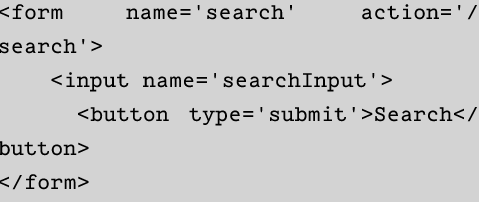
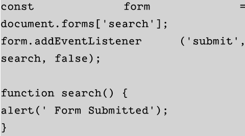

Week04
Forms
- Password input fields
- Text input fields
- Check input Fields
- Radio button input fields
- Hidden inputs fields
-
Object Oriented Programming
Form is an element that help us to sent information to a server, and then this information is processed
Search Example
An input field where the user can search phrase.
Form Properties and Method
Form objects have a number of usuful propierties that use can use
Reset buttons can be considered bad practice
Submitting a Form
This is one of the most important form event.
We can use jaascrpt to intercept the information before submitting to the server.
One of the intersting things I learned is that makeHero is useful to gives us our submitted information tranformed to JSON display and display it in an alert dialog
We also can find the next type of input Forms
Is a style of programming that involves separating the code into objects that have properties and methods